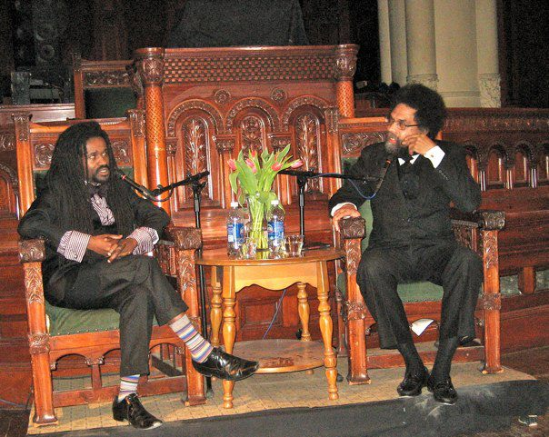

Friends,
Tonight at 7:30 PM please listen live to my conversation with Dr. Cornel West, one of our nation's foremost public intellectuals, as we hold an intergenerational dialogue on the meaning and impact of the ongoing protests in Ferguson, Missouri.
Two nights ago, around midnight, I was arrested on the streets of Ferguson, as I stood with fellow clergy to support and protect our youth who continue to protest the lack of action in response to the death of Mike Brown.
This one-minute video of our nonviolent direct action and my arrest was captured by an international media outlet:

This work is Holy Work: defending kids that this country has betrayed.
So I am calling on you to participate in this month's national "Ferguson October: A Weekend of Resistance" mobilization. Throughout the weekend of October 10-13, local Ferguson leadership supported by national allies will join together to press the police and government for accountability and action in response to Mike Brown's death.
If you can, we urge you to come stand with us in Ferguson. There will be marches, rallies, worship and prayer vigils, and civil disobedience. The Fellowship of Reconciliation in partnership with PICO, Sojourners, and the Samuel DeWitt Proctor Conference are appealing to ordained clergy, in particular, to join us on the morning of Monday, Oct. 13 for a faith-centered nonviolent direct action that will be taken in the proud tradition of our freedom struggle movement.
If you can't come, please ensure that your own house of worship or spiritual community stands with us by preaching and teaching about racial justice, police brutality, and restorative justice that weekend.
Bless you and our children,
Rev. Osagyefo Uhuru Sekou
Freeman Fellow, Fellowship of Reconciliation
Pastor for Faith & Formation, First Baptist Church, Jamaica Plain MA
P.S., Don't forget tonight's 7:30 PM Livestream broadcast of my conversation with Dr. Cornel West and young seminarian-activists: "Keeping Ferguson Alive! An Intergenerational Conversation on Activism, Experience, and Transformation." (If you're in NYC, reserve your tickets to the free event at Union Theological Seminary.)
P.P.S., Please consider making a donation today to FOR to support our racial justice efforts in Ferguson and nationwide.
|